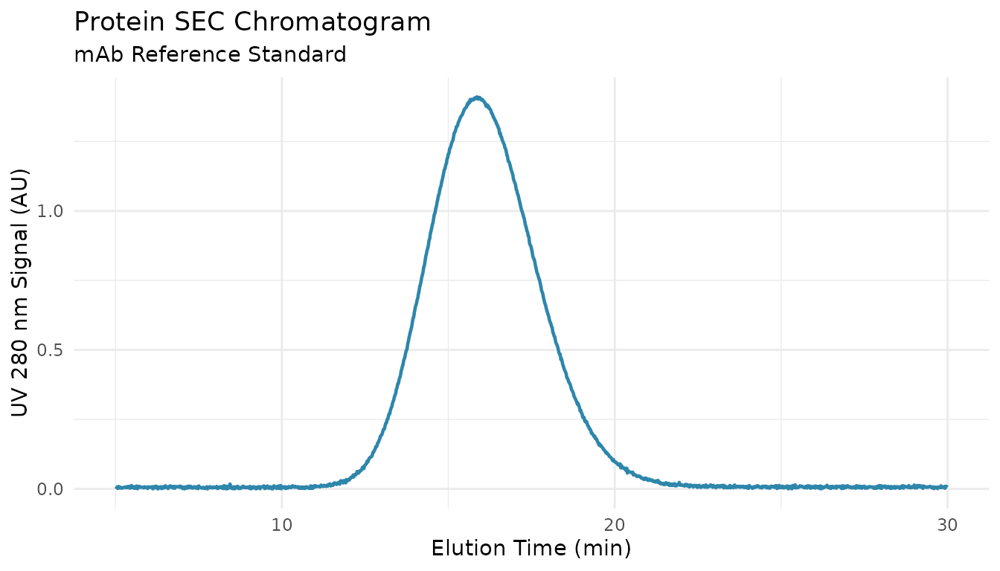
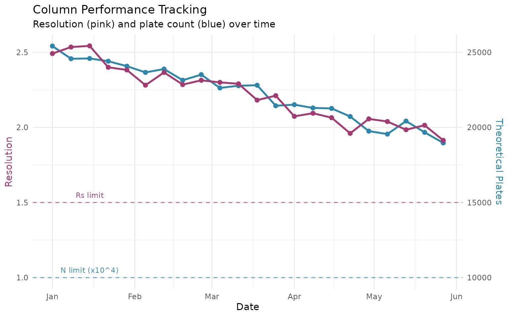

Overview
System Suitability Testing (SST) ensures your SEC system is performing adequately before analyzing samples. This guide shows you how to: 1. Extract peak parameters from chromatogram data 2. Calculate key SST metrics (resolution, plate count, asymmetry) 3. Run comprehensive system suitability tests 4. Track column performance over time
Quick Reference: Typical Acceptance Criteria
| Parameter | Symbol | Typical Limit | Notes |
|---|---|---|---|
| Resolution | Rs | >= 1.5 | Between critical pair |
| Plate count | N | >= 5,000 | For main peak |
| Tailing factor | Tf | 0.8 - 1.5 | USP method at 5% height |
| Mass recovery | % | 95 - 105% | Detected vs. injected |
| Retention RSD | %RSD | <= 1.0% | Across replicates |
| Area RSD | %RSD | <= 2.0% | Across replicates |
Setup
library(measure)
#> Loading required package: recipes
#> Loading required package: dplyr
#>
#> Attaching package: 'dplyr'
#> The following objects are masked from 'package:stats':
#>
#> filter, lag
#> The following objects are masked from 'package:base':
#>
#> intersect, setdiff, setequal, union
#>
#> Attaching package: 'recipes'
#> The following object is masked from 'package:stats':
#>
#> step
library(measure.sec)
library(dplyr)
library(ggplot2)Starting from Chromatogram Data
In real-world SST, you start with a chromatogram from your SEC
system. Let’s use the sec_protein dataset which contains UV
detection data from a protein SEC analysis with multiple species.
Visualize the Chromatogram
# Load protein SEC data
data(sec_protein)
# Look at the reference standard
reference <- sec_protein |>
filter(sample_id == "mAb-Reference")
# Plot the chromatogram
ggplot(reference, aes(x = elution_time, y = uv_280_signal)) +
geom_line(color = "#2E86AB", linewidth = 0.8) +
labs(
x = "Elution Time (min)",
y = "UV 280 nm Signal (AU)",
title = "Protein SEC Chromatogram",
subtitle = "mAb Reference Standard"
) +
theme_minimal()
Understanding Peak Parameters
Your chromatography software typically reports a peak table with these key parameters:
| Parameter | What It Measures | How It’s Determined |
|---|---|---|
| Retention time | When peak apex elutes | Time at maximum signal |
| Peak width | How broad the peak is | Width at baseline or half-height |
| Peak area | Amount of material | Integrated signal |
| Leading width | Front half-width | Distance from front edge to apex |
| Tailing width | Back half-width | Distance from apex to back edge |
For this example, let’s define peak parameters based on the chromatogram above. In practice, these come from your integration software:
# Peak parameters from integration (typical protein SEC)
# These represent what your software would report
peaks <- data.frame(
name = c("HMW", "Dimer", "Monomer", "Fragment"),
retention = c(6.8, 8.2, 10.5, 13.1), # minutes
width = c(0.35, 0.28, 0.42, 0.38), # width at half height (for SST)
width_base = c(0.70, 0.56, 0.84, 0.76), # width at baseline
area = c(0.8, 1.2, 96.5, 1.5), # % of total
height = c(0.018, 0.025, 0.350, 0.022) # AU
)
peaks
#> name retention width width_base area height
#> 1 HMW 6.8 0.35 0.70 0.8 0.018
#> 2 Dimer 8.2 0.28 0.56 1.2 0.025
#> 3 Monomer 10.5 0.42 0.84 96.5 0.350
#> 4 Fragment 13.1 0.38 0.76 1.5 0.022How QC Metrics Are Calculated
Resolution: Measuring Peak Separation
Resolution quantifies how well two adjacent peaks are separated. It uses retention times and peak widths from your peak table.
# Extract parameters for dimer and monomer peaks
dimer <- peaks |> filter(name == "Dimer")
monomer <- peaks |> filter(name == "Monomer")
# Show the calculation
cat("Dimer retention:", dimer$retention, "min\n")
#> Dimer retention: 8.2 min
cat("Monomer retention:", monomer$retention, "min\n")
#> Monomer retention: 10.5 min
cat("Dimer baseline width:", dimer$width_base, "min\n")
#> Dimer baseline width: 0.56 min
cat("Monomer baseline width:", monomer$width_base, "min\n")
#> Monomer baseline width: 0.84 min
cat("\n")
# USP Resolution formula: Rs = 2(t2 - t1) / (w1 + w2)
Rs <- measure_sec_resolution(
retention_1 = dimer$retention,
retention_2 = monomer$retention,
width_1 = dimer$width_base,
width_2 = monomer$width_base,
method = "usp"
)
cat("Resolution (USP) = 2 ×", monomer$retention - dimer$retention,
"/ (", dimer$width_base, "+", monomer$width_base, ")\n")
#> Resolution (USP) = 2 × 2.3 / ( 0.56 + 0.84 )
cat(" =", round(Rs, 2), "\n")
#> = 3.29Interpretation: - Rs < 1.0: Peaks overlap significantly - Rs = 1.5: Baseline separation (~99.7% resolved) - Rs > 2.0: Complete separation with baseline gap
Plate Count: Measuring Column Efficiency
Plate count measures how sharp your peaks are. Sharper peaks = more plates = better efficiency. It uses retention time and peak width.
# For the monomer peak (main peak)
cat("Monomer retention:", monomer$retention, "min\n")
#> Monomer retention: 10.5 min
cat("Monomer half-height width:", monomer$width, "min\n")
#> Monomer half-height width: 0.42 min
cat("\n")
# USP formula for half-height: N = 5.54 × (tR / w0.5)²
N <- measure_sec_plate_count(
retention = monomer$retention,
width = monomer$width,
width_type = "half_height"
)
cat("Plate count = 5.54 × (", monomer$retention, "/", monomer$width, ")²\n")
#> Plate count = 5.54 × ( 10.5 / 0.42 )²
cat(" = 5.54 ×", round((monomer$retention / monomer$width)^2, 1), "\n")
#> = 5.54 × 625
cat(" =", round(N), "plates\n")
#> = 3462 platesWhat affects plate count: - Column packing quality - Flow rate (too fast = lower N) - Sample overloading - Extra-column dispersion (tubing, fittings)
Peak Asymmetry: Checking Peak Shape
Asymmetry measures whether a peak is symmetric (ideal) or tailing/fronting. It compares the leading half-width to the tailing half-width at a specific height.
# For asymmetry, we need leading and tailing half-widths
# (measured at 5% height for USP, 10% height for EP)
# Let's assume slight tailing for the monomer:
leading_width <- 0.20 # front half-width at 5% height
tailing_width <- 0.24 # back half-width at 5% height
cat("Leading half-width (at 5%):", leading_width, "min\n")
#> Leading half-width (at 5%): 0.2 min
cat("Tailing half-width (at 5%):", tailing_width, "min\n")
#> Tailing half-width (at 5%): 0.24 min
cat("\n")
# USP Tailing Factor: Tf = (a + b) / 2a
Tf <- measure_sec_asymmetry(
leading = leading_width,
tailing = tailing_width,
method = "usp"
)
cat("Tailing factor = (", leading_width, "+", tailing_width, ") / (2 ×", leading_width, ")\n")
#> Tailing factor = ( 0.2 + 0.24 ) / (2 × 0.2 )
cat(" =", round(Tf, 2), "\n")
#> = 1.1
cat("\nInterpretation: Tf =", round(Tf, 2))
#>
#> Interpretation: Tf = 1.1
if (Tf >= 0.8 && Tf <= 1.5) {
cat(" → Pass (acceptable range 0.8-1.5)\n")
} else {
cat(" → Investigate\n")
}
#> → Pass (acceptable range 0.8-1.5)Mass Recovery: Verifying Complete Detection
Recovery checks that all injected sample was detected. This requires knowing the injected mass and comparing to detected mass from integration.
# Typical protein SEC injection
injected_mass <- 0.050 # mg (50 µg)
detected_mass <- 0.048 # mg from integration area and response factor
recovery <- measure_sec_recovery(
detected_mass = detected_mass,
injected_mass = injected_mass
)
cat("Injected mass:", injected_mass * 1000, "µg\n")
#> Injected mass: 50 µg
cat("Detected mass:", detected_mass * 1000, "µg\n")
#> Detected mass: 48 µg
cat("Recovery:", round(recovery, 1), "%\n")
#> Recovery: 96 %Low recovery causes: - Sample adsorption to column/tubing - Aggregation during analysis - Detector calibration drift - Baseline integration errors
Running Comprehensive SST
Once you understand how each metric is calculated, you can run a complete SST evaluation.
Basic System Suitability Test
# Use the peak table we defined earlier
sst <- measure_sec_suitability(
peaks = peaks,
reference_peaks = c("Dimer", "Monomer"), # Critical pair for resolution
column_length = 30 # cm
)
# View results with pass/fail status
print(sst)
#> SEC System Suitability Test
#> ==================================================
#>
#> Overall Status: FAILED
#>
#> Results:
#> --------------------------------------------------
#> resolution : 6.571429 (>= 1.5) [PASS]
#> plate count : 3462.0 (>= 5000) [FAIL]
#> plates per meter : 11542.0 (informational) [INFO]
#> --------------------------------------------------The output shows each metric with its value, acceptance criterion, and pass/fail status. A summary at the end indicates overall system suitability.
SST with Custom (Stricter) Criteria
For validated biopharmaceutical methods, you may need tighter criteria:
strict_criteria <- list(
resolution_min = 2.0, # Higher than default 1.5
plate_count_min = 8000, # Higher than default 5000
tailing_min = 0.9, # Tighter than default 0.8
tailing_max = 1.3, # Tighter than default 1.5
recovery_min = 97, # Tighter than default 95%
recovery_max = 103, # Tighter than default 105%
retention_rsd_max = 0.5, # Tighter precision
area_rsd_max = 1.0
)
sst_strict <- measure_sec_suitability(
peaks = peaks,
reference_peaks = c("Dimer", "Monomer"),
criteria = strict_criteria
)
print(sst_strict)
#> SEC System Suitability Test
#> ==================================================
#>
#> Overall Status: FAILED
#>
#> Results:
#> --------------------------------------------------
#> resolution : 6.571429 (>= 2) [PASS]
#> plate count : 3462.0 (>= 8000) [FAIL]
#> --------------------------------------------------Tip: Document your acceptance criteria in your
method validation protocol. The defaults in
measure_sec_suitability() are typical starting points but
should be verified for your specific application.
SST with Replicate Injections
For precision assessment, your peak table includes multiple injections:
# 6 replicate injections of the same sample
peaks_reps <- data.frame(
name = rep(c("Dimer", "Monomer"), each = 6),
replicate = rep(1:6, 2),
retention = c(
8.22, 8.21, 8.23, 8.20, 8.22, 8.21, # Dimer
10.50, 10.51, 10.49, 10.52, 10.50, 10.51 # Monomer
),
width = c(
0.28, 0.27, 0.28, 0.28, 0.29, 0.28,
0.42, 0.41, 0.42, 0.41, 0.42, 0.42
),
area = c(
1.2, 1.3, 1.2, 1.1, 1.2, 1.2,
96.5, 96.2, 96.7, 96.4, 96.5, 96.6
)
)
sst_reps <- measure_sec_suitability(
peaks = peaks_reps,
reference_peaks = c("Dimer", "Monomer")
)
summary(sst_reps)
#> SEC System Suitability Summary
#>
#> Metrics evaluated: 3
#> Passed: 2
#> Failed: 1
#>
#> Overall: FAILEDWhat to Do When SST Fails
| Failure | Immediate Action | If Problem Persists |
|---|---|---|
| Resolution | Re-inject standard | Check mobile phase, column age |
| Plate count | Check flow rate, temperature | Column may need replacement |
| Tailing | Inspect fittings for leaks | Column may have void |
| Recovery | Re-integrate, check baseline | Sample may be adsorbing |
| RSD | Check autosampler, re-run | Investigate system precision |
Decision tree: 1. Single failure → Re-inject and re-evaluate 2. Repeated failure → Investigate root cause (see Troubleshooting) 3. Multiple metrics fail → Do not proceed with sample analysis
Tracking Column Performance Over Time
Use SST data from daily runs to monitor column aging.
Column Performance Log
# SST results collected over several months
set.seed(42)
dates <- seq(as.Date("2024-01-01"), as.Date("2024-06-01"), by = "week")
n_weeks <- length(dates)
# Simulated gradual column degradation
column_log <- tibble(
date = dates,
plates = seq(25000, 19500, length.out = n_weeks) + rnorm(n_weeks, 0, 300),
resolution = seq(2.5, 1.95, length.out = n_weeks) + rnorm(n_weeks, 0, 0.05),
asymmetry = seq(1.02, 1.25, length.out = n_weeks) + rnorm(n_weeks, 0, 0.02)
)Visualizing Trends
ggplot(column_log, aes(date)) +
geom_line(aes(y = plates / 10000), color = "#2E86AB", linewidth = 1) +
geom_point(aes(y = plates / 10000), color = "#2E86AB", size = 2) +
geom_line(aes(y = resolution), color = "#A23B72", linewidth = 1) +
geom_point(aes(y = resolution), color = "#A23B72", size = 2) +
geom_hline(yintercept = 1.5, linetype = "dashed", color = "#A23B72", alpha = 0.7) +
geom_hline(yintercept = 1.0, linetype = "dashed", color = "#2E86AB", alpha = 0.7) +
annotate("text", x = as.Date("2024-01-15"), y = 1.55,
label = "Rs limit (1.5)", color = "#A23B72", size = 3) +
annotate("text", x = as.Date("2024-01-15"), y = 1.05,
label = "N limit (10k)", color = "#2E86AB", size = 3) +
scale_y_continuous(
name = "Resolution",
sec.axis = sec_axis(~ . * 10000, name = "Theoretical Plates")
) +
labs(
x = "Date",
title = "Column Performance Tracking",
subtitle = "Resolution (pink) and plate count (blue) over time"
) +
theme_minimal() +
theme(
axis.title.y.left = element_text(color = "#A23B72"),
axis.title.y.right = element_text(color = "#2E86AB")
)
Predicting Column Replacement
min_plates <- 10000
min_resolution <- 1.5
column_log <- column_log |>
mutate(
plates_ok = plates > min_plates,
resolution_ok = resolution > min_resolution,
overall_ok = plates_ok & resolution_ok
)
first_failure <- which(!column_log$overall_ok)[1]
if (!is.na(first_failure)) {
cat("Column replacement needed at week:", first_failure, "\n")
cat("Date:", format(column_log$date[first_failure]), "\n")
cat("Resolution at failure:", round(column_log$resolution[first_failure], 2), "\n")
cat("Plates at failure:", round(column_log$plates[first_failure]), "\n")
} else {
cat("Column still within specifications\n")
}
#> Column still within specificationsColumn Qualification
When installing a new column, perform a full qualification using calibration standards. This provides baseline metrics to track over the column’s lifetime.
# Calibration data from polymer standards
cal_standards <- data.frame(
retention = c(5.2, 6.1, 7.0, 8.2, 9.5, 10.8),
mw = c(1200000, 400000, 100000, 30000, 5000, 580),
width = c(0.40, 0.35, 0.30, 0.28, 0.25, 0.30)
)
# Evaluate column performance
col_perf <- measure_sec_column_performance(
cal_standards,
column_length = 30, # cm
particle_size = 5 # µm
)
print(col_perf)
#> SEC Column Performance
#> ==================================================
#>
#> Separation Range:
#> Exclusion limit: 1200000 Da
#> Total permeation: 580 Da
#> Log MW range: 3.32 decades
#>
#> Calibration:
#> Selectivity: 0.5801 log(MW)/unit
#> R-squared: 0.9956
#>
#> Column Efficiency:
#> HETP: 0.070 mm (70.4 um)
#> Plates/meter: 14203
#> Reduced HETP (h): 14.08
#> Average plates (N): 4261
#>
#> Resolution:
#> Peak capacity: 12.9
#> Resolution/decade: 15.99
#>
#> Column: 300 x 7.8 mm
#> Standards used: 6Key qualification metrics:
| Metric | Typical Spec | What It Indicates |
|---|---|---|
| HETP | < 50 µm | Packing quality |
| Reduced HETP | 2-5 | Optimal flow vs efficiency |
| Plates/meter | > 20,000 | Column efficiency |
| Peak capacity | > 10 | Separation power in MW range |
Troubleshooting Guide
Low Resolution
| Cause | Check | Fix |
|---|---|---|
| Column degradation | Plate count trending down | Replace column |
| Overloading | Peak width increases with load | Reduce injection |
| Mobile phase | Buffer age, contamination | Fresh mobile phase |
Peak Tailing (Tf > 1.5)
| Cause | Check | Fix |
|---|---|---|
| Column void | Retention time shifted | Replace column |
| Secondary interactions | Peaks worse for some analytes | Adjust pH/salt |
| System dead volume | All peaks affected | Check fittings |
Regulatory References
USP <621>
| Parameter | Requirement |
|---|---|
| Resolution | Rs >= 2.0 (unless specified) |
| Tailing | T <= 2.0 |
| RSD (n >= 5) | <= 2.0% for areas |
See Also
- Getting Started - Basic SEC workflow and concepts
- Protein SEC Analysis - Biopharm aggregate analysis
- Calibration Management - Save and track calibrations
- Exporting Results - QC reports and data export
Session Info
sessionInfo()
#> R version 4.5.2 (2025-10-31)
#> Platform: x86_64-pc-linux-gnu
#> Running under: Ubuntu 24.04.3 LTS
#>
#> Matrix products: default
#> BLAS: /usr/lib/x86_64-linux-gnu/openblas-pthread/libblas.so.3
#> LAPACK: /usr/lib/x86_64-linux-gnu/openblas-pthread/libopenblasp-r0.3.26.so; LAPACK version 3.12.0
#>
#> locale:
#> [1] LC_CTYPE=C.UTF-8 LC_NUMERIC=C LC_TIME=C.UTF-8
#> [4] LC_COLLATE=C.UTF-8 LC_MONETARY=C.UTF-8 LC_MESSAGES=C.UTF-8
#> [7] LC_PAPER=C.UTF-8 LC_NAME=C LC_ADDRESS=C
#> [10] LC_TELEPHONE=C LC_MEASUREMENT=C.UTF-8 LC_IDENTIFICATION=C
#>
#> time zone: UTC
#> tzcode source: system (glibc)
#>
#> attached base packages:
#> [1] stats graphics grDevices utils datasets methods base
#>
#> other attached packages:
#> [1] ggplot2_4.0.1 measure.sec_0.0.0.9000 measure_0.0.1.9001
#> [4] recipes_1.3.1 dplyr_1.1.4
#>
#> loaded via a namespace (and not attached):
#> [1] gtable_0.3.6 xfun_0.55 bslib_0.9.0
#> [4] lattice_0.22-7 vctrs_0.6.5 tools_4.5.2
#> [7] generics_0.1.4 parallel_4.5.2 tibble_3.3.0
#> [10] pkgconfig_2.0.3 Matrix_1.7-4 data.table_1.18.0
#> [13] RColorBrewer_1.1-3 S7_0.2.1 desc_1.4.3
#> [16] lifecycle_1.0.4 compiler_4.5.2 farver_2.1.2
#> [19] textshaping_1.0.4 codetools_0.2-20 htmltools_0.5.9
#> [22] class_7.3-23 sass_0.4.10 yaml_2.3.12
#> [25] prodlim_2025.04.28 tidyr_1.3.2 pillar_1.11.1
#> [28] pkgdown_2.2.0 jquerylib_0.1.4 MASS_7.3-65
#> [31] cachem_1.1.0 gower_1.0.2 rpart_4.1.24
#> [34] parallelly_1.46.0 lava_1.8.2 tidyselect_1.2.1
#> [37] digest_0.6.39 future_1.68.0 purrr_1.2.0
#> [40] listenv_0.10.0 labeling_0.4.3 splines_4.5.2
#> [43] fastmap_1.2.0 grid_4.5.2 cli_3.6.5
#> [46] magrittr_2.0.4 survival_3.8-3 future.apply_1.20.1
#> [49] withr_3.0.2 scales_1.4.0 lubridate_1.9.4
#> [52] timechange_0.3.0 rmarkdown_2.30 globals_0.18.0
#> [55] nnet_7.3-20 timeDate_4051.111 ragg_1.5.0
#> [58] evaluate_1.0.5 knitr_1.51 hardhat_1.4.2
#> [61] rlang_1.1.6 Rcpp_1.1.0 glue_1.8.0
#> [64] ipred_0.9-15 jsonlite_2.0.0 R6_2.6.1
#> [67] systemfonts_1.3.1 fs_1.6.6